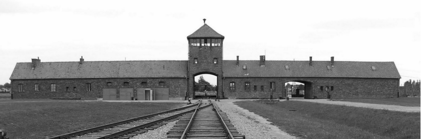

Questão 1
Prática de perseguição política, étnica, religiosa e sexual estabelecida durante os anos de governo nazista de Adolf Hitler.

Observe a imagem
Auschwitz é o nome de uma rede de campos de concentração localizados no sul da Polônia operados pelo Terceiro Reich nas áreas polonesas anexadas pela Alemanha Nazista, maior símbolo do Holocausto perpetrado pelo nazismo durante a Segunda Guerra Mundial. Ele foi o maior dos campos de concentração nazistas e designado para ser o campo de extermínio. e o lugar para a Solução Final dos judeus. Entre o começo de 1942 e o fim de 1944, trens transportaram judeus de toda a Europa ocupada para as câmaras de gás do campo. O primeiro comandante, Rudolf Höss, testemunhou depois da guerra, no Julgamento de Nuremberg, que mais de três milhões de pessoas haviam morrido ali, 2.500.000 gaseificadas e 500.000 de fome e doenças. Hoje em dia os números mais aceitos são em torno de 1,3 milhão, sendo 90% deles de judeus. Outros deportados para Auschwitz e executados foram 150 mil poloneses, 23 mil ciganos romenos, 15 mil prisioneiros de guerra soviéticos, cerca de 400 Testemunhas de Jeová e dezenas de milhares de pessoas de diversas nacionalidades. Aqueles que não eram executados nas câmaras de gás morriam de fome, doenças infecciosas, trabalhos forçados, execuções individuais ou experiências médicas.
Qual o nome designado ao maoir campo de extermínio de Auschwitz?
Prática de perseguição política, étnica, religiosa e sexual estabelecida durante os anos de governo nazista de Adolf Hitler.
As cenas do filme “O Menino de Pijama Listrado” retratam o momento em que os Judeus eram levados para as câmaras de gás nos campos de concentração. A partir do que foi estudado marque as alternativas que descrevem como era a vida dos Judeus nos campos de concentração.
Com relação ao holocausto dos judeus, perpetrado pelos nazistas, assinale a alternativa correta:
A razão adotada pelos nazistas para realizarem o holocausto de diversos povos residia em uma suposta teoria científica, na qual os arianos seriam uma raça superior a diversos outros povos que existiam no mundo. Frente a isso, aponte a alternativa que indica um povo que não foi alvo do holocausto nazista.
A história do Holocausto ficou também marcada por fatos, locais, teorias e personagens que passaram para a história como representantes deste sombrio período histórico do século XX. A partir das informações referentes ao Holocausto, relacione os dois grupos de afirmativas abaixo, indicando depois quais os pares relacionados estão totalmente corretos.
a. Anne Frank.
b. Auschwitz.
c. Solução Final.
d. Eugenia.
e. Arianismo.
1. Campo de concentração localizado na Polônia, onde milhares de judeus e ciganos foram mortos pelo exército nazista.
2. Teoria racial que pregava a supremacia da raça ariana sobre as demais raças existentes entre os seres humanos.
3. Garota judia que ficou famosa por escrever um diário onde relatava o cotidiano em um gueto judeu.
4. Nome dado à política de extermínio maciço dos judeus que se encontravam nos campos de concentração.
5. Teoria biológica desenvolvida no século XIX, que afirmava que as diferenças entre as várias etnias indicava a superioridade de uma sobre as outras.
Assinale a alternativa em que os pares estão corretos: